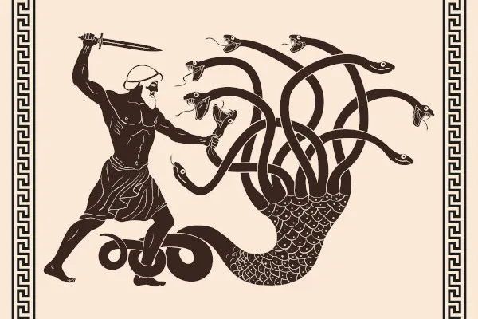

Como surgiu a Mitologia Grega
A Mitologia Grega surgiu da curiosidade que os gregos tinham de explicar a origem da vida e os problemas da existência. Assim, criaram deuses imortais à semelhança do ser humano, com o intuito de explicar fatos de algo que não compreendiam na época.
Oque é a Mitologia Grega
Mitologia grega é o termo que se usa para definir o conjunto de mitos que fizeram parte da cultura e da religiosidade dos gregos antigos. Essas narrativas foram a forma encontrada pelos gregos para explicar a realidade, incluindo os fenômenos da natureza e, até mesmo, práticas e tradições da Grécia Antiga.
Os mitos, naturalmente, não foram usados para explicar apenas os fenômenos da natureza e as tradições gregas, mas também a origem do planeta, dos homens e dos próprios deuses. Podiam ser contados oralmente, mas os gregos foram um povo que registrou pela escrita uma parte considerável da sua cultura.
Homero e Hesíodo
Os trabalhos de Homero e Hesíodo contribuíram significativamente para o registro de boa parte de todo o conhecimento que se tem sobre a mitologia gregos e os princípios da religiosidade desse povo.
Homero
Homero foi o compositor de dois poemas muito conhecidos: a "ilíada" e "Odisseia". ilíada narra os eventos da Guerra de Troia e Odisseia, o retorno de Odisseu, um dos personagens da Guerra de Troia, à sua residência, em Ítaca. Os historiadores entendem que Homero registrou os poemas que formam esses dois livros, mas não os inventou porque acredita-se que eles já eram contados pelos gregos havia séculos.
Hesíodo
No caso de Hesíodo, os dois trabalhos de que se tem conhecimento foram: Teogonia e Trabalhos e dias. Ambos também foram possíveis graças à tradição oral dos gregos, que os preservou e os repassou adiante. Teogonia é um poema que registra o surgimento do mundo bem como o surgimento dos deuses. Já Trabalhos e dias se trata da organização dos homens, abordando temas relacionados a trabalho, comércio, justiça, entre outros. Esse poema também trata da vida pessoal de Hesíodo.
Deuses da Mitologia Grega
É impossível falarmos de mitologia grega sem mencionar seus principais personagens: os Deuses. Os gregos eram politeístas e acreditavam na existência de várias divindades. Os mitos gregos apresentavam-nos como imortais, no entanto, assim como os humanos, eles tinham sentimentos. Assim, os deuses gregos se apaixonavam, sentiam ódio, ciúmes, inveja, envaideciam-se, sentiam compaixão e poderiam agir movidos por esses sentimentos. Os mitos ressaltavam que essas divindades tinham qualidades e defeitos também humanos, e suas personalidades, eventualmente, geravam conflitos.
Os deuses poderiam ser a personificação de fenômenos da natureza, mas também representar valores abstratos presentes na cultura e sociedade gregas. Assim, por exemplo, os gregos acreditavam que Zeus tinha o poder de controlar o clima, portanto, qualquer mudança brusca nesse sentido poderia ser entendida como ação dele.
As principais divindades gregas eram olímpicas, isto é, que residiam no Monte Olimpo, governado por Zeus. Os deuses olímpicos se estabeleceram após a guerra iniciada por Zeus contra os titãs. Esse conflito recebeu o nome de Titanomaquia e se iniciou porque Zeus se rebelou contra o próprio pai, Cronos, e foi em busca de seus irmãos, que haviam sido devorados pelo titã. Depois de vencida a guerra, Zeus e seus irmãos procederam com a divisão dos reinos, e Zeus ficou com os céus, Hades, com o submundo, e Poseidon, com as águas. Ninguém ficou com a Terra, pois ela era o domínio de Gaia. Importante mencionar que nem todos os deuses gregos residiam no Olimpo, como é o caso de Hades, deus do submundo.
Alguns dos principais Deuses da Mitologia Grega são:
- Zeus:
- Afrodite
- Apolo
- Ares
- Atena
- Eros
- Hermes
- Poseidon
Religião na Grécia Antiga:
Herois da Mitologia Grega
Não só de deuses foi formada a mitologia grega, mas também de seres das mais variadas formas e também de heróis, conhecidos como Semideuses, isto é, mortais que eram filhos de deuses. Dois dos heróis mais conhecidos da mitologia grega foram Perseu e Hércules.
Perseu, filho de Zeus e Dânae, ficou marcado por ter recebido a missão de obter a cabeça de Medusa, uma górgona, ser monstruoso conhecido por sua ferocidade e por sua capacidade de transformar em pedra as pessoas que olhassem diretamente para ela. Perseu contou com a ajuda dos deuses e cumpriu o feito ao decapitá-la.
Hércules, por sua vez, era filho de Zeus e Alcmena e portador de uma força sobre-humana. Foi perseguido por Hera parte de sua vida, sendo levado à loucura e induzido a assassinar sua esposa e seus filhos. Além disso, ficou marcado por ter concluído 12 trabalhos que eram considerados impossíveis.
Alguns dos principais Heróis da Mitologia Grega são:
- Belerofonte
- Perseu
- Menelau
- Herácles
- Agamenon
- Aquiles
- Atlanta
- Ajax
Interessante:
A Mitologia Grega é tão conhecida e curiosa que criaram filmes, séries e jogos baseados em tais mitos. Os mais conhecidos são:
- Filmes
- Fúria de Titãs (2010)
- Tróia (2004)
- Percy Jackson e o Ladrão de Raios (2010)
- Séries
- Tróia: A Queda de Uma Cidade (2018)
- Hércules (1998)
- O sangue de Zeus (2020)
- jogos
- God of War (2018)
- Assassin's Creed: Valhalla (2020)
- Smite (2014)